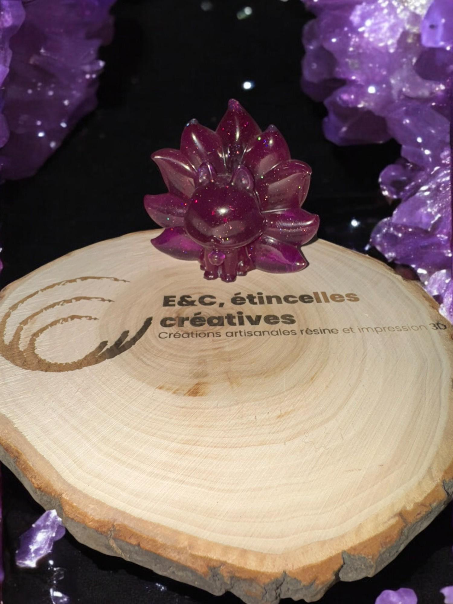

Renard à 9 queues violet et paillettes
décoration en résine · renards · fait main
16,00 €
Cette figurine violette, ornée de paillettes scintillantes, évoque une esthétique à la fois délicate et captivante. Inspirée par le renard à neuf queues, elle symbolise la mystique et la beauté, ajoutant une touche d'élégance à tout espace. Son design unique en fait un objet de décoration idéal pour les amateurs d'art et de nature.
Frais de port estimés (achat sur ce site) — Mondial Relay (point relais) : 4,15 € · Colissimo (point retrait) : 4,79 €